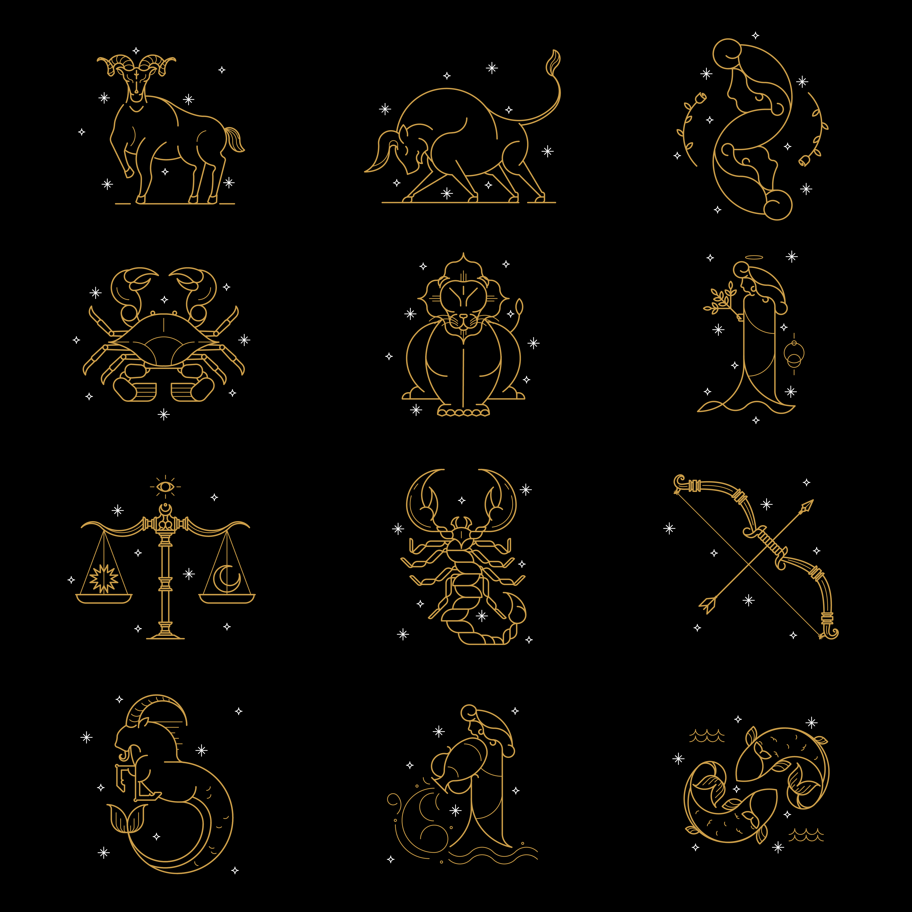
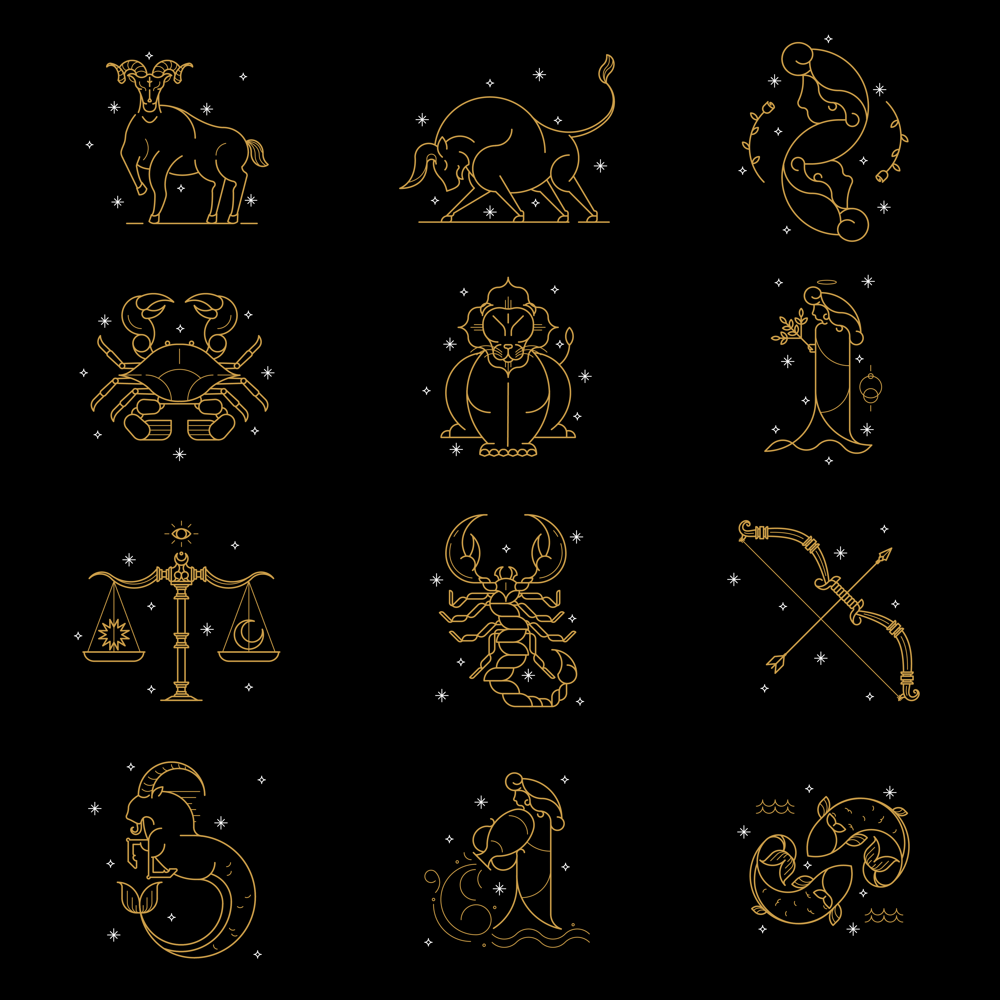
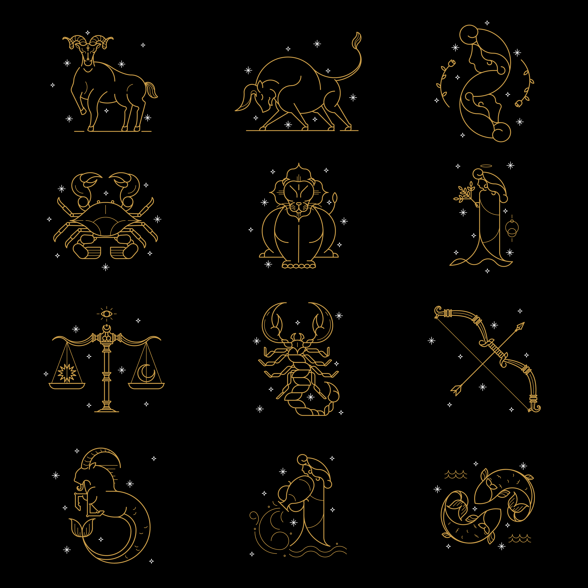

Bienvenue sur "Clairvoyance" ! Nous sommes Tessa et Lou, deux étudiantes passionnées de communication, et nous avons créé ce site dans le cadre d'un projet d'école sur le développement web. Mais ne vous y trompez pas, notre objectif est de vous offrir une expérience de voyance comme vous n'en avez jamais vue, avec une touche d'humour pour rendre le tout encore plus mémorable !
Découvrez ce que votre avenir vous réserve grâce à nos services de voyance professionnels. Nos voyants expérimentés, dotés d'un sens de l'humour exceptionnel, sont là pour vous guider à travers les choix importants de votre vie tout en vous faisant sourire.
Nous croyons fermement que chaque individu a un destin unique et des chemins différents à parcourir. Que vous soyez à la recherche d'amour, de succès professionnel, ou simplement de quelques bons éclats de rire, laissez-nous vous aider à éclaircir votre route vers le bonheur et la réussite.
Chez "Clairvoyance", nous transformons la voyance en une aventure divertissante et enrichissante. Préparez-vous à découvrir votre avenir avec légèreté et positivité, parce qu'après tout, même les étoiles aiment rire !
Nous proposons une gamme de services de voyance personnalisés :
Nos voyants utilisent des techniques éprouvées pour vous offrir des prédictions précises et des conseils avisés. Chaque consultation est confidentielle et personnalisée selon vos besoins.
La chiromancie est originaire de l'Inde ancienne et est maintenant populaire dans le monde entier. La chiromancie est une pratique divinatoire de prévoir le destin et de révéler la caractéristique d'une personne en lisant les lignes de la paume, les formes des mains et les monts, etc. La chiromancie révèle les prédictions sur la richesse, la santé, l'amour et la sagesse d'une personne en fonction de l'interprétation de 5 lignes principales (la ligne de vie, la ligne de cœur, la ligne de tête, la ligne du destin, la ligne de la chance) et de 7 lignes secondaires. De plus, certaines empreintes de palmier rares, telles que la paume coupée (demi-paume) et M dans la paume, ont des significations particulières.
L'étude statistique de l'astrologie cherche à déterminer si une corrélation peut être observée entre les phénomènes étudiés traditionnellement par l'astrologie (planètes, Lune/satellite, signes, domification, aspects, transits…) et des évènements objectifs dans la psychologie ou la destinée humaine. Ces recherches, qui tentent d'établir à travers la méthode expérimentale la validité de l'astrologie, ont parfois été jusqu'à revendiquer un statut d'astrologie scientifique1 mais elles sont généralement perçues comme une démarche pseudo-scientifique.
Le tarot divinatoire est un art divinatoire qui utilise les cartes du tarot de Marseille ou sous d'autre forme comme le tarot des anges ou tarot des égyptiens. Il s'agit d'une forme de cartomancie. C'est l'art de tirer les cartes, les tarots1. L'interprétation des cartes de tarot – comme oracle ou dans le cadre d'une approche plus psychologique – est parfois désignée par des néologismes, comme « tarologie ». Cette pratique repose sur un ensemble de croyances, propres à l'occultisme, quant à l'existence de forces mystérieuses ou de liens invisibles entre les choses. Dans le milieu occultiste, de nombreuses théories attribuent à l'usage divinatoire des cartes de tarot, comme aux cartes elles-mêmes, des origines mythiques très diverses : Égypte ancienne, Bohémiens, etc.. Historiquement, la plus ancienne trace connue de l'approche des cartes de tarot comme instrument d'interprétation apparaît à Bologne dans la première moitié du xviiie siècle2. Un point marquant de son développement apparait vraisemblablement à la fin du xviiie siècle, dans l’œuvre d'Antoine Court de Gébelin immédiatement prolongée par Jean-Baptiste Alliette, dit « Etteilla », mais la source en est vraisemblablement italienne3. Au xixe siècle, Eliphas Lévi développa une théorie qui, associant notamment les 22 cartes majeures (nommées « arcanes majeurs » à partir de 1863, en référence au lexique de Paracelse) aux 22 lettres de l'alphabet hébreu, est devenue la référence dans le milieu occultiste.
Les personnages, objets ou événements de votre rêve ont une signification différente de la réalité. Ce dictionnaire des reves vous permettra d'analyser vos rêves avec les "yeux de l'âme". Il s'agit donc d'un guide gratuit qui vous aidera mais ce n'est pas une science exacte, il faut adapter l'interpretation des reves à votre expérience de vie, vos croyances pour affiner l'interprétation de vos songes. Dans un reve, le plus important c'est l'énergie qui est ressentie ou dégagée par un objet ou une par une personne. Il ne faut pas essayer de rapporter cela sur le plan matériel mais plutôt sur le plan spirituel. Pourquoi analyser ses rêves avec le dictionnaire des reves ? Pour améliorer son évolution matérielle, personnelle en prenant conscience de chacune des décisions, actions ou réactions face à une situation. A vous de faire votre analyse... Interpréter les rêves et trouver la definition des reves avec le dictionnaire des rêves. Le dico des rêves est gratuit et vous propose, une liste complète de définitions sur les rêves. Ces définitions sont classées par ordre alphabétique et par mots clés et symboles oniriques.
Obtenez une lecture de tarot gratuite pour découvrir ce que les cartes révèlent sur votre avenir.

Pour toute question ou prise de rendez-vous, n'hésitez pas à nous contacter :